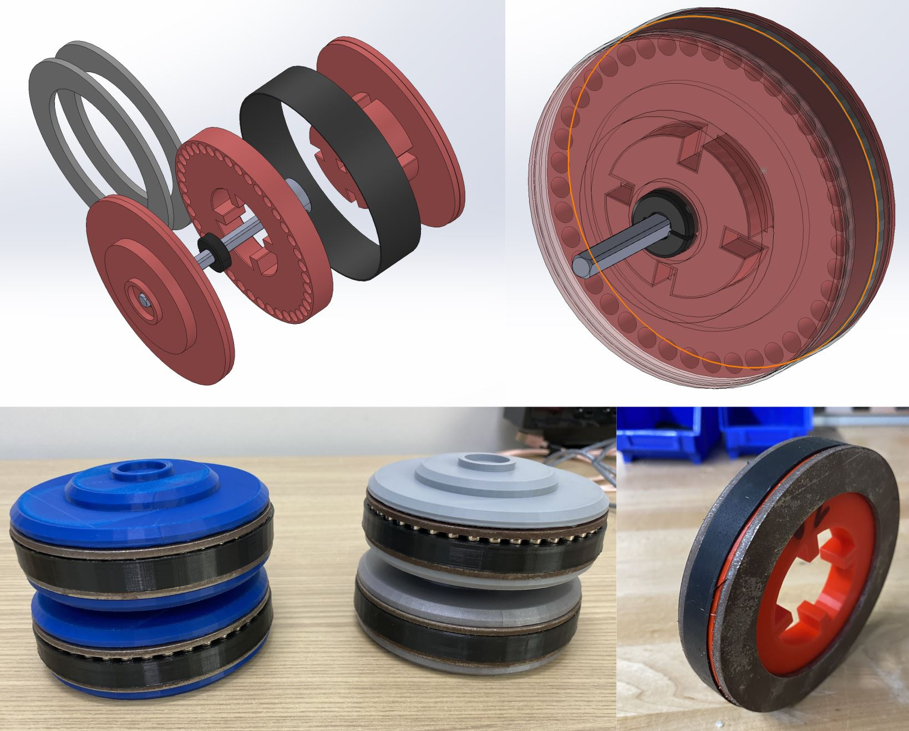
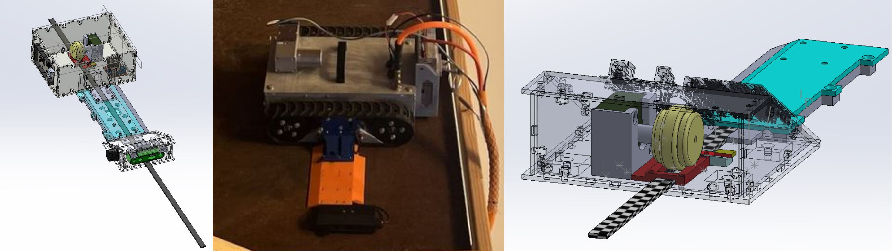
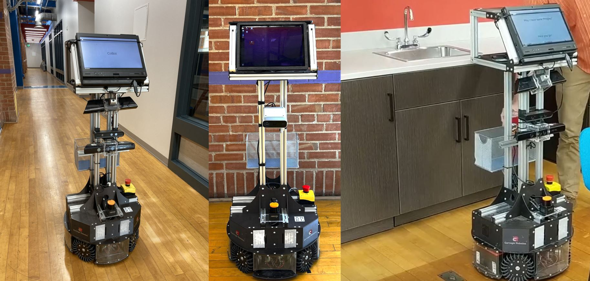
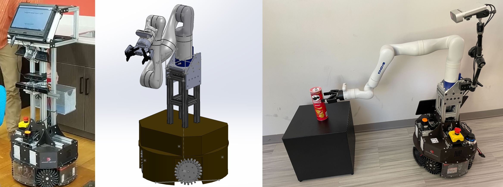

SolidWorks Projects and Custom Robotics
Throughout my career, I have designed and manufactured a variety of hardware solutions and robotic systems.
Wombot Hardware Design
I have worked on the hardware design of many custom robots and custom features for robots. One of those robots is the "Wombot," a magnetic wall riding robot. My hardware contributions to this project include the design and integration of magnetic wheels, the design and testing of various sensors, material selection for many aspects of the robot, and design of the lower sensor assembly.
Magnetic Wheels
In order to provide adhesion to the metal walls that the robot would be driving on, I designed and tested a set of magnetic wheels. These wheels were designed such that they would not damage the metal walls, but would still provide strong adhesion. This design went through many iterations and tests to achieve the ideal wheel size, magnetic adhesion, and best traction.
These wheels have a series of holes that accept small cylindrical magnets. To disperse the magnetic adhesion across the widest area, two metal discs were placed either side of the magnetic core. These magnetic wheels provided roughly 15-20 pounds of magnetic force per wheel, which allowed the robot base to drive across the wall without worry of falling off during an operation.
Sensor Design
One major sensor component that I developed for Wombot was a gap sensing sensor. This sensor went through many phases of development. The video below demonstrates this sensor in action. In order to detect potential gaps in the seal against the wall, a thin feeler rod would be pushed down into the seal. Using the lines on the feeler rod, a visual sensor would be able to determine the depth of the rod and thus the size of the gap. This sensor was designed to be modular, allowing for easy replacement and maintenance.

This video is a full prototype of the sensor suite that I designed and tested that would then go on to be integrated into the full robot lower assembly.
Lower Assembly Sensor Suite
The Wombot robot was designed with two shells joined by a connector bridge as can be seen in the picture on the left. The larger upper assembly was responsible for housing the majority of the robot's electronics and drive components while the lower assembly would run under an outer seal and contain the sensor suite. This sensor suite included the gap sensor discussed above, an ultrasonic sensor, and a monocular camera. All of the sensors would be used to perform various inspection analysis on the wall, such as looking for gaps in the seal, looking for damage to the wall, and looking for other irregularities.

Cobot Hardware Design
Another robot that I have worked on is the "Cobot," a collaborative robot that is designed to work alongside humans. My hardware contributions to this project include the addition of a robotic arm and general hardware design for the robot.
Cobot Initial Design
Initially, the Cobot was designed as a collaborative omnidirectional robot. This was incorporated in the design through two primary features. First, the Cobot had a relatively small footprint, taking up a similar amount of space in an area as a human would. Secondly, the Cobot was made omnidirection thanks to it's custom wheels and opposite axis orientation. This allows the Cobot to move in any direction, much closer mimicing the movement of a human.
The primary design on the Cobot was already complete by the time I started working with it, however my involvment in the project focused primarily on maintenance, adjustment, and addition of new features as research saw fit. One such addition was the major design change of adding a robotic arm to turn the Cobot into a mobile manipulator.
Development of a Mobile Manipulator
By adding a robot arm to the Cobot base, researchers would be able to do more complex tasks with the Cobot such as opening doors, moving items around, and otherwise interacting with the environment in ways that it could not do before. This was a major design change, as the Cobot was not originally designed to have a robot arm attached to it.
My role had me design, build, and integrate the new arm onto the existing Cobot base while still maintaining important features, such as the 2D lidar. This design presented a number of challenges, such as the weight of the arm, the size of the arm, and the power requirements. To account for the weight of the arm as well as improve the reach of the Cobot, the mounting point was made to be relatively low to the ground. This allows the arm to reach things both on the ground and on tables, while also keeping the center of gravity low and preventing it from tipping over even at full extension. Throughout this design process, I gained significant experience in redesign of an existing system, upgrading a platform to add new features, as well as working with a robotic arm and the associated challenges.
If you have questions about my hardware design experience, feel free to send me an email at keith.fritz@me.com